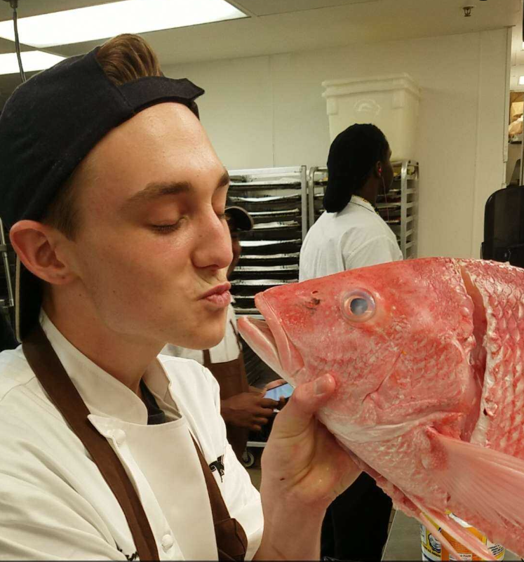

About Me
 I am 22 years old from Jacksonville, Florida. I live in Charlotte, NC for now with my amazing girlfriend. I grew up around Jacksonville, in the Middleburg area. While growing up, I was heavily involved in Boy Scouts where I earned the rank of Eagle Scout. It was not an easy journey, and I almost did not complete all of the requirements. During high school, I started taking culinary classes so I would know how to cook while I was in college. Those classes started a lifelong passion for all things food. After high school, I moved to Charlotte to go to college at Johnson & Wales University. I was able to take part in the Advanced Standing program for Culinary Arts (allowing me to complete my freshman year over the course of a summer). The following year, I did the same program for Baking and Pastry. This allowed me to complete 2 Associates degrees in 2 years. Next, I started my major classes in Entreprenuership. These classes helped me realize that I wanted to open food related businesses in the future and gave me the tools and resources to see that dream come to life. I graduated from Johnson & Wales after 3 years, with 3 degrees. Since college has ended, I have begun to learn basic web design in hopes that I can become adept enough to turn my skills into a side job. After i have become proficient, I want to start learning other programming languages and possibly get into robotics a little. So far, coding is a little complicated but there is a lot of satisfaction that comes from getting the code to actually do what you want it too. I am very excited to keep learning as much as I can.
"Ancora imparo" -Michelangelo